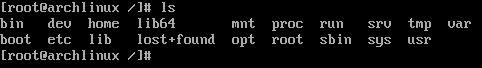
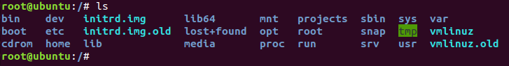
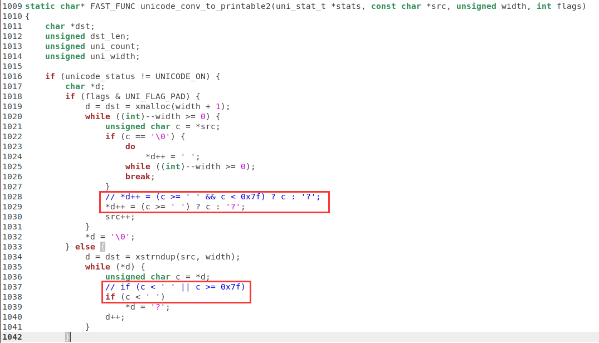
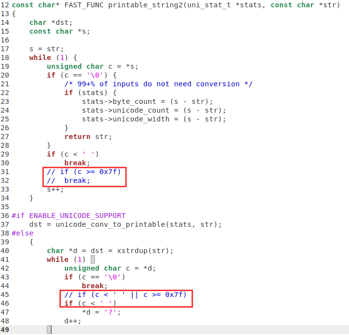
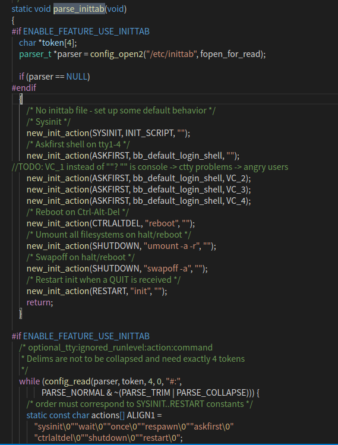

开发平台：Ubuntu 18.04.6
目标平台：imx-6ull
busybox 版本：busybox-1.32.0.tar.bz2
编译工具链：gcc versions 10.3.1 20210621 (GNU Toolchain for the A-profile Architecture 10.3-2021.07 (arm-10.29))
# 环境搭建
# 交叉编译器
关于 arm linux 交叉编译工具链的搭建，这里就再不展开说明了，毕竟在此之前如果有移植过 uboot，那么这里就可以省略了，对于没有搭过交叉编译工具链的，可以查看上一篇 imx-6ULL uboot 移植 的交叉编译搭建的环节。
# 文件系统
你可能听过这么一句 “Unix 系统中一切皆文件” 的话，它是指 Unix 系统中的所有的一切都可以通过文件的方式访问、管理，即使不是文件，也以文件的形式来管理；那么对于这些文件的管理，需要一个系统去管理集中访问，而这样一个系统称为文件系统，它可以使我们以文件 IO 的形式对文件目录进行访问，而非以 Flash 存储地址进行访问，在使用上更为方便轻松。
# 组成
对于现有的 Linux 版本，不同的 Linux 衍生版本其文件系统的根目录都略有不同，但整体上的组成没多大区别。


一般来说，在构成最小 rootfs 的目录结构会包含以下几个：
| 目录 | 说明 | 补充 |
|---|---|---|
| bin | 可执行文件，主要的是系统命令，普通用户和 root 都可以执行 | 必须存在 |
| dev | 设备文件，设备树定义的节点就在这里 | 必须存在 |
| etc | 存放着各配置文件 | 必须存在 |
| home | 系统预设的使用者家目录 | 非必须 |
| lib | 存放的是 32 bit 系统中的动态和静态链接库文件 | 必须存在 |
| lib64 | 64 bit 桌面系统存在的东西，存放着支持 64 bit 的运行库 | 嵌入式系统不需要 |
| mnt | 临时挂载目录，一般是空目录 | 非必须 |
| opt | 第三方软件安装存放目录 ，目前都安装在 /usr/local 目录里 | 非必须 |
| proc | 虚拟文件系统，是系统内存的映射，主要存放系统的内核、进程和网络状态 | 必须存在 |
| sbin | 系统管理命令存放目录，只有 root 可以使用，普通用户只可查看 | 必须存在 |
| sys | 系统使用的目录，虚拟文件系统。和 /proc/ 相似，该目录中的数据都保存在内存中 | 必须存在 |
| usr | 是 Unix Software Resource | 非必须 |
| var | 存放一些可以改变的数据，包括系统运行中需调用或改变的数据 | 必须存在 |
# 构建
根文件系统的制作方法有很多，像在已知的系统中把整个根文件系统打包出来然后再进行裁剪，或者使用三大神器 busybox、buildroot、yocto 构建等。
利用已有的系统提取裁剪，这种方法一般适用于同平台版本的情况下，对于不同的平台版本下，可能会出现运行环境错误的情况；
使用 busybox 构建文件系统，则仅仅只是帮我们构建好一些 shell 命令程序集，像 lib 库、/etc 目录下的一些文件都需要自己手动创建，如果需要用到第三方软件，还需要去移植一些第三方软件库，比如 alsa、iperf、mplayer 等等；而且 busybox 构建的根文件系统默认没有用户名和密码设置；
buildroot，它不仅包含了 busybox 的功能，而且里面还集成了各种软件包，当需要什么软件就选择什么软件，不需要额外移植；buildroot 可以构建完整的根文件系统，因此极大的方便了嵌入式 Linux 开发人员对根文件系统进行制作；
至于 yocto 构建根文件系统，是一个古老的、很庞大的系统构建工具，其实其不单止可以构建根文件系统，还可以用来构建 u-boot、kernel、交叉编译工具链等等，一般为 SOC 厂家、设备厂商、系统开发这些用于统一发布标准套件，但由于操作复杂，开发学习时间也久，一般用户开发不会选择这一方式。
# busybox
官方下载：https://busybox.net/downloads/
在这里选择下载 busybox-1.32.0.tar.bz2 版本。
对下载下来的 busybox 进行解压：
tar -jxvf busybox-1.32.0.tar.bz2 | ||
cd busybox-1.32.0 |
# 编译验证
选择交叉编译工具对其进行默认编译：
sudo -s | ||
export ARCH=arm | ||
export CROSS_COMPILE=arm-none-linux-gnueabihf- | ||
make distclean | ||
make defconfig | ||
make | ||
make install |
最后，生成一个名为 _install 的文件目录（当然，你也可以使用 CONFIG_PREFIX=rootfs_dir 指定文件目录名称及路径），该目录就是本次默认配置所构建的残缺文件系统，为什么说是残缺，是因为还缺少相关的文件及目录，这个下面再说。
# 自主配置
前面说了，上面的操作只是构建了一个默认的配置用以验证，实际过程中，往往根据需要选择必要的功能，而在 busybox 中支持以下几种快速配置模式：
- defconfig：缺省配置，也就是默认配置选项。
- allyesconfi：全选配置，也就是选中 busybox 的所有功能。
- allnoconfig：最小配置，什么都不选中，即空配置。
在应用中，你可以先选择你最接近的快速配置进行初始化配置，然后再修改定制，这里笔者选择 make allnoconfig 进行配置初始化，配置完成后可通过查看是否有 .config 文件来验证配置成功。
同样的，跟 uboot 和 kernel 一样，在 busybox 中也存在图形界面配置操作（关于无法调出图形配置界面进行配置可看 imx-6ULL kernel 移植 的图形配置说明）：
make menuconfig |
关于其选项操作：
Settings ---> # BusyBox 的通用配置，一般采用默认值即可。 | |
--- Applets | |
Archival Utilities ---> # 压缩、解压缩相关工具。 | |
Coreutils ---> # 最基本的命令，如cat、cp、ls等。 | |
Console Utilities ---> # 控制台相关命令。 | |
Debian Utilities ---> # Debian 操作系统相关命令。 | |
klibc-utils ---> # 供 initramfs 所使用的最小化 libc 子集。 | |
Editors ---> # 编辑工具，如 vi、awk、sed 等。 | |
Finding Utilities ---> # 查找工具，如find、grep、xargs。 | |
Init Utilities ---> # BusyBox init 相关命令。 | |
Login/Password Management Utilities ---> # 登陆、用户账号/密码等方面的命令。 | |
Linux Ext2 FS Progs ---> # ext2 文件系统的一些工具。 | |
Linux Module Utilities ---> # 加载/卸载模块等相关的命令。 | |
Linux System Utilities ---> # 一些系统命令。 | |
Miscellaneous Utilities ---> # 一些不好分类的命令，如crond、crontab。 | |
Networking Utilities ---> # 网络相关的命令和工具。 | |
Print Utilities ---> # print spool 服务及相关工具。 | |
Mail Utilities ---> # mail 相关命令。 | |
Process Utilities ---> # 进程相关命令，如ps、kill等。 | |
Runit Utilities ---> # runit 程序。 | |
Shells ---> # shell 程序。 | |
System Logging Utilities ---> # 系统日志相关工具，如 syslogd、klogd。 | |
--- | |
Load an Alternate Configuration File # 加载备用配置文件 | |
Save Configuration to an Alternate File # 将配置保存到备用文件 |
然后在这里记录几个关键的配置：
静态或者动态编译 busybox，取消选择静态编译，使得 busybox 可执行文件更小
-> Settings
-> [ ] Build static binary (no shared libs)
打开命令行编辑，增加 vi 编辑样式，其余默认或按需修改
-> Settings
-> [*] Command line editing
[*] vi-style line editing commands
打开简洁式 help 命令提示
-> Settings
-> [*] Show applet usage messages
[ ] Show verbose applet usage messages
[*] Store applet usage messages in compressed form
选择支持 Unicode 编码，其余默认或按需修改
-> Settings
-> [*] Support Unicode
[*] Check $LC_ALL, $LC_CTYPE and $LANG environment variables
取消对模块实用程序的简化，这样在该表将会额外多出几个拓展选项
-> Linux Module Utilities
-> [ ] Simplified modutils
打开设备自主管理功能，实现初始化常用设备和动态更新
-> Linux System Utilities
-> [*] mdev
[*] Support /etc/mdev.conf
[*] Support subdirs/symlinks
[*] Support regular expressions substitutions when renaming dev
[*] Support command execution at device addition/removal
[*] Support loading of firmware
[*] Support daemon mode
选择内核启动后 init 进程处理
-> Init Utilities
-> [*] init
-> [ ] linuxrc: support running init from initrd (not initramfs)
在这里，取消勾选
linuxrc；在 Linux2.4 内核及更低版本，由initrd引导加载文件系统，核心文件就是linuxrc，其通常是一个脚本文件，负责加载内核访问根文件系统必须的驱动， 以及加载根文件系统，如果你勾选上那么编译后你将会看到一个/linuxrc文件；Linux2.6 内核之后被initramfs取代，与initrd需要先解压再挂载模拟成一个块设备不同，initramfs在编译阶段就被打包成cpio格式，内核可以直接将其解压建立文件系统。为了保持向后兼容性，实际上，在这些发行版中，
initrd通常只是一个指向initramfs的符号链接；也就是说，你所看到的initrd实际上已经是现代化的initramfs了，通过ls -l linuxrc可以看到其实是个软链接而非文件脚本了。shell 终端选择
-> Shells
-> [*] ash
-> [*] hush
Almquist shell (也称为 A shell、ash 和 sh) 是一种轻量级 Unix shell（最大的特点就是轻量化）；Hush 是一个创新的 shell 脚本语言，它将 Lua 的简洁性和 Unix 的实用性融为一体。
-> Shells
Choose which shell is aliased to 'sh' name (ash) --->
Choose which shell is aliased to 'bash' name (hush) --->
分别为
sh/bash指定 ash 和 hush shell 名称。
# 添加中文支持
在上面启用 Unicode 编码后，可以通过修改以下几个文件来实现中文显示。
1、修改 unicode.c 文件
sudo vim libbb/unicode.c |
找到 unicode_conv_to_printable2 函数，进行以下修改：

2、修改 printable_string.c 文件
sudo vim libbb/printable_string.c |
找到 printable_string2 函数，进行以下修改：

# 编写脚本
1、默认配置生成脚本
#!/bin/bash | |
# 若之前已经导入到环境变量则不需要 | |
export PATH=$PATH:/usr/local/arm/gcc-arm-10.3-2021.07-x86_64-arm-none-linux-gnueabihf/bin | |
# 若已经在顶层 Makefile 文件中指定则不需要 | |
export ARCH=arm | |
# 若已经在顶层 Makefile 文件中指定则不需要 | |
export CROSS_COMPILE=arm-none-linux-gnueabihf- | |
make distclean | |
make defconfig | |
make -j$(nproc) | |
make install -j$(nproc) |
2、数据修改脚本
#!/bin/bash | |
# 若之前已经导入到环境变量则不需要 | |
export PATH=$PATH:/usr/local/arm/gcc-arm-10.3-2021.07-x86_64-arm-none-linux-gnueabihf/bin | |
# 若已经在顶层 Makefile 文件中指定则不需要 | |
export ARCH=arm | |
# 若已经在顶层 Makefile 文件中指定则不需要 | |
export CROSS_COMPILE=arm-none-linux-gnueabihf- | |
make clean | |
make -j$(nproc) | |
make install -j$(nproc) |
通过执行 build.sh 或 make menuconfig 修改及执行 autobuild.sh 得到所需的二进制执行程序，这时在生成的目录下可以看到：
| | |
|-- bin | |
|-- sbin | |
|-- usr | |
|-- bin | |
|-- sbin |
# 补充 rootfs 目录
根据上面 rootfs 的构成，尽管是要做最小 rootfs，除 busybox 生成的目录文件外，还需要我们去填补运行所需的目录文件。
# 添加 lib 库
Linux 中的应用程序一般都是需要动态库的，当然你也可以编译成静态的，但是静态的可执行文件会很大。如果编译为动态的话就需要动态库，所以我们需要向根文件系统中添加动态库，包括前面提到的 busybox 配置中的动态编译。这些动态库可以从调用的交叉编译器中获取，。
1、 /lib 库添加
mkdir lib | ||
cp -d /usr/local/arm/gcc-arm-10.3-2021.07-x86_64-arm-none-linux-gnueabihf/arm-none-linux-gnueabihf/libc/lib/*so* lib/ | ||
cp -d /usr/local/arm/gcc-arm-10.3-2021.07-x86_64-arm-none-linux-gnueabihf/arm-none-linux-gnueabihf/libc/lib/*.a lib/ |
复制 arm linux 交叉编译器下的 libc/lib 库里的 *so* 和 *.a 到 rootfs 的 lib 中， -d 连同软链接也一起拷贝。
2、 /usr/lib 库添加
mkdir -p usr/lib | ||
cp -d /usr/local/arm/gcc-arm-10.3-2021.07-x86_64-arm-none-linux-gnueabihf/arm-none-linux-gnueabihf/libc/usr/lib/*so* usr/lib | ||
cp -d /usr/local/arm/gcc-arm-10.3-2021.07-x86_64-arm-none-linux-gnueabihf/arm-none-linux-gnueabihf/libc/usr/lib/*.a usr/lib |
复制 arm linux 交叉编译器下的 libc/usr/lib 库里的 *so* 和 *.a 到 rootfs 的 usr/lib 中， -d 连同软链接也一起拷贝。
# 完善根目录
mkdir dev etc home mnt proc sys var |
# 测试
在完成上面的所有操作后，可以利用 NFS 网络挂载文件系统进行测试完善；关于 NFS 服务的搭建可看 Ubuntu 搭建 tftp 及 NFS 服务 。
对于利用 NFS 挂载根文件系统，可以通过修改 uboot 启动的 bootargs 配置来变更文件系统挂载路径，例如：
=> setenv bootargs 'console=ttymxc0,115200 root=/dev/nfs nfsroot=192.168.1.100:/home/user/nfs_rootfs,proto=tcp rw ip=192.168.1.251:192.168.1.100:192.168.1.1:255.255.255.0::eth0:off' | |
=> | |
=> saveenv |
关于 uboot 改成 NFS 挂载 rootfs 的格式（更多信息可看 kernel 里面的 Documentation/filesystems/nfs/nfsroot.txt 及其相关文件）：
root=/dev/nfs nfsroot=[<server-ip>:]<root-dir>[,<nfs-options>] ip=<client-ip>:<server-ip>:<gw-ip>:<netmask>:<hostname>:<device>:<autoconf>:<dns0-ip>:<dns1-ip> | |
<server-ip>：服务器 IP 地址；比如这里的 PC 主机 IP 地址为 192.168.1.100。 | |
<root-dir>：根文件系统的存放路径，要保证放在 NFS 共享目录下；比如 /home/user/nfs_rootfs。 | |
<nfs-options>：NFS 的其他可选选项，一般不设置。 | |
<client-ip>：客户端 IP 地址，也就是开发板的 IP 地址。 | |
<server-ip>：服务器 IP 地址，前面已经说了。 | |
<gw-ip>：网关地址。 | |
<netmask>：子网掩码。 | |
<hostname>：客户机的名字，一般不设置，此值可以空着。 | |
<device>：设备名，也就是网卡名，一般是 eth0，eth1...。 | |
<autoconf>：自动配置，一般不使用，所以设置为 off。 | |
<dns0-ip>：DNS0 服务器 IP 地址，不使用。 | |
<dns1-ip>：DNS1 服务器 IP 地址，不使用。 | |
“proto=tcp”表示使用 TCP 协议，“rw”表示 nfs 挂载的根文件系统为可读可写。 |
在这里，结合 imx-6ULL uboot 移植 篇章，可以配置成：
=> setenv netargs setenv bootargs 'console=${console},${baudrate} root=/dev/nfs nfsroot=${serverip}:/home/user/nfs_rootfs,proto=tcp rw ip=${ipaddr}:${serverip}:${gatewayip}:${netmask}::eth0:off' | |
=> | |
=> setenv nfsboot 'run findfdt; run findtee; mmc dev ${mmcdev}; mmc dev ${mmcdev}; run netargs; run loadimage; run loadfdt; bootz ${loadaddr} - ${fdt_addr}' | |
=> | |
=> saveenv | |
=> | |
=> run nfsboot |
最后，通过运行 nfsboot 来启动。
# 添加 rcS 文件
通过 uboot 执行 run nfsboot 进入系统后，可以看到已经成功挂在 NFS 上的 rootfs 了：

但是在进入根文件系统的时候，打印上有一行报错，显示错误提示：
can't run '/etc/init.d/rcS': No such file or directory |
提示不能运行 /etc/init.d/rcS ，没有这个文件；该文件是个 shell 脚本，Linux 内核启动以后需要启动一些服务，而 rcS 就是规定启动哪些文件的脚本文件
那么补充一下这个文件，并写入以下内容：
#!/bin/sh | |
# | |
# rcS Call all S??* scripts in /etc/rcS.d in | |
# numerical/alphabetical order. | |
# | |
# Version: @(#)/etc/init.d/rcS 2.76 19-Apr-1999 miquels@cistron.nl | |
# | |
PATH=/sbin:/bin:/usr/sbin:/usr/bin # 初始化环境变量 PATH，操作系统执行程序默认到 PATH 指定的目录下寻找该程序 | |
runlevel=S # 设置系统运行级别为 S，即 single-user（单用户）模式 | |
prevlevel=N # 用来记录上一个运行级别的值，以便系统能够在需要时回到前一个运行级别，为 N 则表示没有 | |
umask 022 # 指定当前用户在创建文件时的默认权限，默认 touch 创建一个文件的权限是 644 | |
export PATH runlevel prevlevel # 导出环境变量 | |
# | |
# Mount all file systems defined in /etc/fstab | |
# | |
mkdir /dev/pts | |
mount -a # 挂载 /etc/fstab 文件中指定的文件系统 | |
# | |
# Make sure proc is mounted | |
# | |
[ -d "/proc/1" ] || mount /proc # 确保 /proc 已挂载 | |
# | |
# Trap CTRL-C &c only in this shell so we can interrupt subprocesses. | |
# | |
trap ":" INT QUIT TSTP # 捕捉 INT、QUIT、TSTP 信号 | |
# | |
# Call all parts in order. | |
# | |
exec /etc/init.d/rc.local # 转去执行 rc.local 文件中内容 |
# 补充 fstab 和 rc.local 文件
在添加完 /etc/init.d/rcS 后再次运行：

可以看到本次打印已经没有上面的提示了，但是会多出两个文件的报错：
mount: can't read '/etc/fstab': No such file or directory | |
mount: can't read '/etc/fstab': No such file or directory | |
/etc/init.d/rcS: exec: line 34: /etc/init.d/rc.local: not found |
分别是缺失 /etc/fstab 和 /etc/init.d/rc.local ，其实从上面的 rcS 文件上的注释可以看到，该文件是会调用 fstab 和 rc.local ，因此补充这两个文件：
/etc/fstab用于指定系统需要挂载的文件系统，其格式如下：
<file system> <mount point> <type> <options> <dump> <pass>
<file system>：要挂载的特殊的设备，也可以是块设备，比如 /dev/sda 等等
<mount point>：挂载点。
<type>：文件系统类型，比如 ext2、ext3、proc、romfs、tmpfs 等等。
<options>：挂载选项，一般使用 defaults，defaults 包含了 rw、suid、 dev、 exec、 auto、 nouser 和 async。
<dump>：为 1 的话表示允许备份，为 0 不备份，一般不备份，因此设置为 0。
<pass>：磁盘检查设置，为 0 表示不检查。根目录 ‘/’ 设置为 1，其他的都不能设置为 1，因此这里一般设置为 0
fstab # stock fstab - you probably want to override this with a machine specific one
proc /proc proc defaults 0 0
tmpfs /dev tmpfs defaults 0 0
sysfs /sys sysfs defaults 0 0
devpts /dev/pts devpts mode=0620,gid=5 0 0
/etc/init.d/rc.local该文件一般作为
rcS文件的拓展，可有可无，用于设置特定的与系统级无关的操作rc.local #!/bin/sh# 设置从 /etc/hostname 文件中获取的主机名/bin/hostname -F /etc/hostname# 使用 mdev 来管理热插拔设备，使 Linux 内核就可以在 /dev 目录下自动创建设备节点echo /sbin/mdev > /proc/sys/kernel/hotplug
mdev -s
# 完善 /dev/pts 和 /etc/hostname
在补充完上述的两个文件后，如果再次运行，那么还是会出现报错：

嘛，这也是预料之中：
在
fstab中需要挂载一个 /dev/pts 路径的虚拟文件系统，用于实现终端设备的动态分配和管理rc.local中需要读取 /etc/hostname 文件来获取主机名
所以在 rcS 中的 mount -a 前面添加 mkdir /dev/pts 命令；创建 /etc/hostname 文件，并在里面填写你喜欢的开发板名字。
再运行一次，这次就没有报错提示了，但是有个问题就是，终端的主机名和用户名都没有显示，与常规的终端显示不一样：

# 添加 profile 文件
之前添加了 /bin/hostname 以获取主机名，并用 hostname -F 配置主机名，但实际效果是命令行的提示符是没有显示，而调用各种执行程序是没问题的，说明这部分是 Shell 变量设置导致的。
查阅常见环境变量：
PATH：执行命令时要搜索的目录列表
HOME：当前用户的家目录
MAIL： 当前用户的邮件储蓄目录
SHELL：当前用户的 Shell 路径
TZ：时区
HISTSIZE：是指保存历史命令记录的条数
LOGNAME：是指当前用户的登录名
PWD：当前的工作目录
HOSTNAME：是指主机的名称，许多应用程序如果要用到主机名的话，通常是从这个环境变量中来取得的
LANG/LANGUGE：是和语言相关的环境变量，使用多种语言的用户可以修改此环境变量
PS1：是基本提示符，对于 root 用户是 #，对于普通用户是 $
PS2：是附属提示符，默认是 “>” ，可以通过修改此环境变量来修改当前的命令符
为了验证是否靠环境变量实现这一作用，编写一个 profile 文件：
# /etc/profile: system-wide .profile file for the Bourne shell (sh(1)) | |
# and Bourne compatible shells (bash(1), ksh(1), ash(1), ...). | |
PATH=$PATH:/usr/local/bin | |
if [ ! -e /etc/localtime -a ! -e /etc/TZ ]; then | |
TZ="UTC" # Time Zone. Look at http://theory.uwinnipeg.ca/gnu/glibc/libc_303.html | |
# for an explanation of how to set this to your local timezone. | |
export TZ | |
fi | |
USER="`id -un`" | |
LOGNAME=$USER | |
HOSTNAME='/bin/hostname' | |
if [ "$HOME" = "/home/root" ]; then | |
PATH=$PATH:/usr/local/sbin | |
fi | |
if [ "$PS1" ]; then | |
# works for bash and ash (no other shells known to be in use here) | |
PS1='\u@\h:\w\$ ' # 显示主机名、当前路径等信息 | |
fi | |
export USER LOGNAME PATH PS1 |
上面的文件除了配置主机名变量和显示终端基本提示符，还追加 $PASH 路径、指定时区及用户名等。
然后重启查看效果，是否能解决命令行提示符显示：

现在是：第一，profile 文件起了作用，hostname 显示出来了，路径指示也显示了；第二，还有个问题就是登录用户名没显示出来。
# 添加 passwad , shadow , group , gshadow 文件
前面已经在 profile 中加入了用户名变量，然而还是没从终端显示出来，那么是不是因为系统没有获取到用户配置信息呢？
与用户配置信息有关的几个文件：
- etc/passwad
/etc/passwd 文件，是系统用户配置文件，存储了系统中所有用户的基本信息，并且所有用户都可以对此文件执行读操作。
文件中每行代表一个用户信息，以 : 作为分隔符，划分为 7 个字段，每个字段所表示的含义如下：
用户名 : 密码 : UID（用户ID） : GID（组ID） : 描述性信息 : 主目录 : Shell 路径 |
添加以下信息：
root:x:0:0:root:/home/root:/bin/bash |
note："x" 表示此用户设有密码，但不是真正的密码，真正的密码保存在 /etc/shadow 文件中。
- /etc/shadow
/etc/shadow 文件，用于存储 Linux 系统中用户的密码信息。
文件中每行代表一个用户信息，以 : 作为分隔符，划分为 9 个字段，每个字段所表示的含义如下：
用户名 : 加密密码 : 最后一次修改时间 : 最小修改时间间隔 : 密码有效期 : 密码需要变更前的警告天数 : 密码过期后的宽限时间 : 账号失效时间 : 保留字段 |
添加以下信息：
root::19424:0:99999:7::: |
note：这里的加密密码保存的是真正加密的密码，目前 Linux 的密码采用的是 SHA512 散列加密算法，原来采用的是 MD5 或 DES 加密算法；而最后一次修改时间是指在 1970 年 1 月 1 日之后的第 n 天修改，eg：19424，可通过 date -d "1970-01-01 19424 days" 得到 2023年 03月 08日 星期三 00:00:00 CST 。
- /etc/group
/ect/group 文件是用户组配置文件，即用户组的所有信息都存放在此文件中。
文件中每行代表一个用户组信息，以 : 作为分隔符，划分为 4 个字段，，每个字段所表示的含义如下：
组名 : 密码 : GID（组ID） : 该用户组中的用户列表 |
添加以下信息：
root:x:0: |
note：和 /etc/passwd 文件一样，这里的 "x" 仅仅是密码标识，真正加密后的组密码默认保存在 /etc/gshadow 文件中。
- /etc/gshadow
/etc/gshadow 文件，用于存储 Linux 系统中组用户的密码信息。
文件中每行代表一个组用户的密码信息，以 : 作为分隔符，划分为 4 个字段，每个字段所表示的含义如下：
组名 : 加密密码 : 组管理员 : 组附加用户列表 |
添加以下信息：
root:*:: |
最后，添加上这几个文件后再运行一次：

这下子，基本的 rootfs 雏形就出来了。
# 添加 inittab 文件
为什么需要这个文件？Linux 内核启动完成后，内核通过启动第一个用户进程（init 进程）来启动其他用户记的进程或服务，init 进程是 Linux 系统中所有进程的父进程。
init 进程将解析 inittab 文件，运行操作系统的配置脚本，对 Linux 系统进行初始化：

inittab 文件是一个不可执行的文本文件，它被按照固定的格式书写，以供 init 进程识别；inittab 由若干条指令组成，每条指令的结构都相同，以 : 作为分隔符，划分为 4 个字段，每个字段所表示的含义如下：
identifier : runlevels : action : process |
identifier
用于唯一标识 inittab 文件中的每条指令。
runlevels
level note runlevel 0 让 init 关闭所有进程并终止系统。 runlevel 1 用来将系统转到单用户模式，单用户模式只能有系统管理员进入，在该模式下处理那些在有登录用户的情况下不能进行更改的文件，改 runlevel 的编号 1 也可以用 S 代替。 runlevel 2 允许系统进入多用户的模式，但并不支持文件共享，这种模式很少应用。 runlevel 3 最常用的运行模式，主要用来提供真正的多用户模式，也是多数服务器的缺省模式。 runlevel 4 一般不被系统使用，用户可以设计自己的系统状态并将其应用到 runlevel。 runlevel 5 将系统初始化为专用的 X Window 终端。对功能强大的 Linux 系统来说，这并不是好的选择，但用户如果需要这样，也可以通过在 runlevel 启动来实现该方案。 runlevel 6 关闭所有运行的进程并重新启动系统。 action
字段 描述 sysinit 在系统初始化的时候 process 才会执行一次。 wait 告诉 init，要等待相应的进程执行完以后才能继续执行。 once init 只运行一次该进程。 respawn init 会监视这个 process，即使其结束后也会立即被重新启动。 askfirst 与 respawn 类似，在运行 process 之前在控制台上显示 “Please press Enter to activate this console.”。只要用户按下 “Enter” 键以后才会执行 process。 ctrlaltdel 当 Ctrl+Alt+Del 三个键同时按下时会执行 process。 restart 当 init 重启的时候才会执行 procee。 shutdown 关机的时候执行 process。 process
表示所要执行的程序、脚本或命令等。
在了解完 inittab 文件的作用后，那么你可以编写你所需要的执行操作了；在这里你可能会问，前面没有创建 /etc/inittab 文件，那为何可以对 Linux 系统进行初始化，这个其实查看代码可以看到，当无法获取 /etc/inittab 文件时，将会使用固定流程进行初始化：

但对于固定流程，我们更偏向于自定义初始化流程，因此可以简单编写：
# Boot-time system configuration/initialization script. | |
# This is run first except when booting in emergency (-b) mode. | |
::sysinit:/etc/init.d/rcS | |
::askfirst:-/bin | |
#::askfirst:-/bin/login | |
# Stuff to do before rebooting | |
::ctrlaltdel:/sbin/reboot | |
# umount all filesystem | |
::shutdown:/bin/umount -a -r | |
#::shutdown:/sbin/swapoff -a | |
# restart init process | |
::restart:/sbin/init | |
# Example of how to put a getty on a serial line (for a terminal) | |
::once:/sbin/getty -L tty0 115200 vt100 -n root -I "Auto login as root ..." |
# 扩展 bosybox 执行命令
这里的拓展命令，并不是指基于原有的 bosybox 工程追加命令，而是通过新的工程编译成独立的执行文件，用以拓展命令。
对于新增编译的 bosybox，一般要满足两个要求：
- glibc 版本的兼容
- 尽可能使 bosybox 版本一致
# GLIBC 版本获取
方法一：
#include<stdio.h> | |
#include<gnu/libc-version.h> | |
int main(void) | |
{ | |
char * str_gnu_ver = gnu_get_libc_version(); | |
printf("gnuc lib version : %s \n",str_gnu_ver); | |
printf("__GLIBC__ = %d \n",__GLIBC__); | |
printf("__GLIBC_MINOR__ = %d \n",__GLIBC_MINOR__); | |
return 0 ; | |
} |
编译运行：
gcc get_glibc_version.c -o get_glibc_version | ||
./get_glibc_version | ||
gnuc lib version : 2.23 | ||
__GLIBC__ = 2 | ||
__GLIBC_MINOR__ = 23 |
这里利用哪个交叉编译器，输出的版本就是该编译器的 GLIBC 版本。
note：GNU C 从 2.0 开始，为 GLIBC 提供两个常量 __GLIBC__ 和 __GLIBC_MINOR__ 用来指示版本。
方法二：
对于开发平台，找到你的交叉编译器所在的安装文件夹，从里面找到 libc.so.6 文件，在该目录下或指向该目录（eg： /usr/local/arm/gcc-arm-10.3-2021.07-x86_64-arm-none-linux-gnueabihf/arm-none-linux-gnueabihf/libc/lib/ ），运行以下命令：
strings /usr/local/arm/gcc-arm-10.3-2021.07-x86_64-arm-none-linux-gnueabihf/arm-none-linux-gnueabihf/libc/lib/libc.so.6 | grep ^GLIBC | ||
GLIBC_2.4 | ||
GLIBC_2.5 | ||
GLIBC_2.6 | ||
GLIBC_2.7 | ||
GLIBC_2.8 | ||
GLIBC_2.9 | ||
GLIBC_2.10 | ||
GLIBC_2.11 | ||
GLIBC_2.12 | ||
GLIBC_2.13 | ||
GLIBC_2.14 | ||
GLIBC_2.15 | ||
GLIBC_2.16 | ||
GLIBC_2.17 | ||
GLIBC_2.18 | ||
GLIBC_2.22 | ||
GLIBC_2.23 | ||
GLIBC_2.24 | ||
GLIBC_2.25 | ||
GLIBC_2.26 | ||
GLIBC_2.27 | ||
GLIBC_2.28 | ||
GLIBC_2.29 | ||
GLIBC_2.30 | ||
GLIBC_2.32 | ||
GLIBC_2.33 | ||
GLIBC_PRIVATE | ||
GLIBC_2.29 | ||
GLIBC_2.26 | ||
GLIBC_2.25 | ||
GLIBC_2.23 | ||
GLIBC_2.8 | ||
GLIBC_2.33 | ||
GLIBC_2.30 | ||
GLIBC_2.5 | ||
GLIBC_2.9 | ||
GLIBC_2.7 | ||
GLIBC_2.6 | ||
GLIBC_2.18 | ||
GLIBC_2.14 | ||
GLIBC_2.11 | ||
GLIBC_2.16 | ||
GLIBC_2.13 |
通常 libc.so 会支持多个版本，即向前兼容，查看该文件中包含的字符串可以看到其支持的版本，通常是连续的。
对于目标平台，同样在相关的 lib 库目录上找到 libc.so.6 文件，然后通过执行或查看软链接：
/lib/lib.so.6 | ||
GNU C Library (GNU libc) stable release version 2.21, by Roland McGrath et al. | ||
Copyright (C) 2015 Free Software Foundation, Inc. | ||
This is free software; see the source for copying conditions. | ||
There is NO warranty; not even for MERCHANTABILITY or FITNESS FOR A | ||
PARTICULAR PURPOSE. | ||
Compiled by GNU CC version 5.3.1 20160113. | ||
Available extensions: | ||
crypt add-on version 2.1 by Michael Glad and others | ||
GNU Libidn by Simon Josefsson | ||
Native POSIX Threads Library by Ulrich Drepper et al | ||
BIND-8.2.3-T5B | ||
libc ABIs: UNIQUE | ||
For bug reporting instructions, please see: | ||
<http://www.gnu.org/software/libc/bugs.html>. | ||
ls -al /lib/lib.so.6 | ||
lrwxrwxrwx 1 root root 12 Mar 8 2023 /lib/libc.so.6 -> libc-2.21.so |
# bosybox 版本获取
主要是获取目标平台上的版本，然后下载相应的 bosybox 版本进行拓展编译。关于获取目标平台上的版本，可以通过执行：
bosybox |
然后下载相应版本进行编译，在这里需要 make menuconfig 把静态编译勾上：
-> Settings | |
-> [*] Build static binary (no shared libs) |
因为如果用动态编译的话，需要调用 lib 库，这样就会使得需要确保交叉编译器得尽可能一致，使用的 lib 库也要尽可能一致，而利用静态编译就不用调用 lib 库了。
# 实现合并
当你编译好一个新的 busybox 后，在 rootfs 上找个目录存放，或者取一个 busybox1 之类的名字存放至 /bin 目录上，然后把生成软链接拓展命令，替换链接到新的 busybox1 即可。
# 参考
https://fuzidage.github.io/2024/07/20/Linux 内核 - rootfs 构建移植 /#3-gou-jian-gen-wen-jian-xi-tong
http://www.lujun.org.cn/?p=3574
https://www.cnblogs.com/linfeng-learning/p/9285543.html
http://blog.chinaunix.net/uid-20564848-id-73954.html